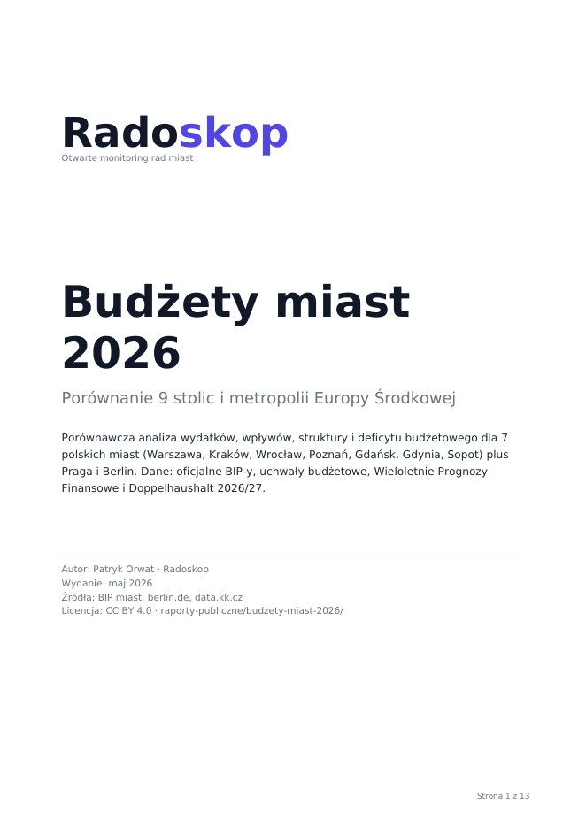

NowyBudżety miast 2026
Porównanie 9 stolic i metropolii Europy Środkowej
Analiza wydatków, wpływów, struktury i deficytu dla 7 polskich miast plus Praga i Berlin. Per kategoria deep dive (edukacja, transport, pomoc społeczna, kultura), trend 2020-2027, inwestycje. Berlin trzy razy więcej na mieszkańca niż Sopot, Praga jako jedyne miasto z nadwyżką.